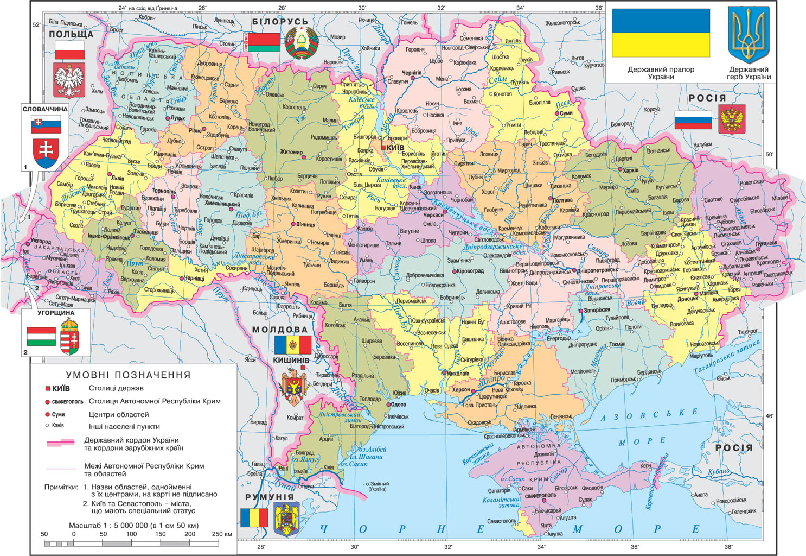
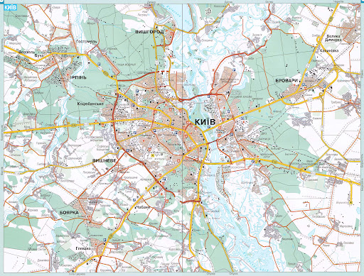
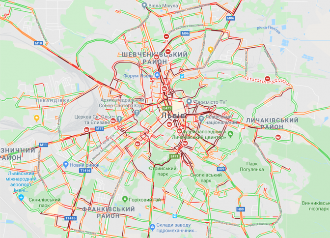
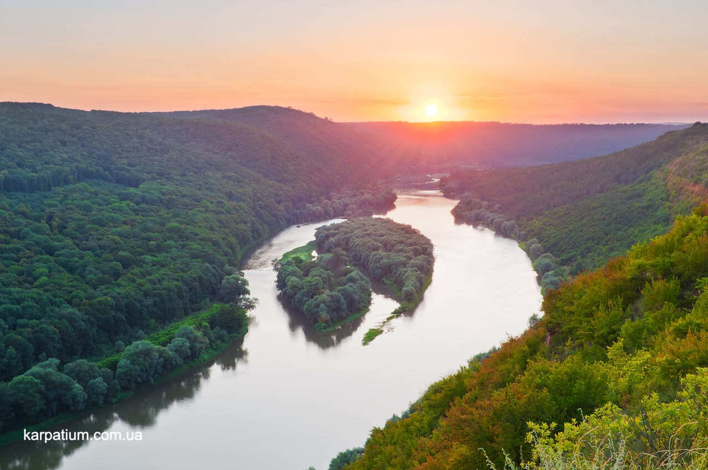

Карта України
Україна - європейська держава з багатовіковою історією та унікальною культурою

🔍 Наведіть курсор на області України:
• Київ • Полтавщина • Львівщина • Чернівці • Рівненщина • Одещина
Київ - столиця України
Місто-герой з тисячолітньою історією, духовний та політичний центр України

Визначні пам'ятки Києва:
• Софійський собор XI століття • Майдан Незалежності • Дніпро • Києво-Печерська лавра • Монумент "Батьківщина-мати"
Львів - культурна столиця
Місто з унікальною архітектурою, багатою історією та європейським шармом

🎭 Унікальні місця Львова:
• Старе місто (ЮНЕСКО) • Площа Ринок • Високий замок • Личаківське кладовище • Оперний театр
Природні багатства України
Україна вражає різноманіттям природних ландшафтів та унікальними заповідними територіями

Дністровський каньйон
Унікальні природні об'єкти:
• Карпати - гірський масив з об'єктами ЮНЕСКО
• Чорне море - важливий транспортний та курортний регіон
• Дністровський каньйон - геологічна пам'ятка природи